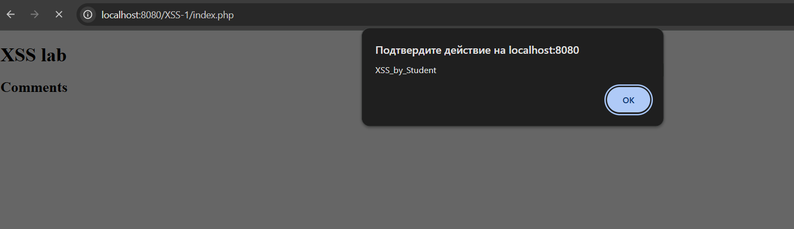

Для определения точного числа уязвимостей использовались данные официальных отчетов CVE Program и агрегатора CVE Details.
Динамика регистраций по кварталам (согласно CVE Program Report 2021):
demos/demo.mysqli.php.showtagfiles, который выводился напрямую на страницу.Анализ статистики за 2021 год подтверждает, что XSS остается массовой проблемой для PHP-разработки. Ошибки встречаются как в крупных фреймворках (Symfony), так и в популярных плагинах (Social Warfare). Это подчеркивает необходимость обязательной фильтрации входных данных и экранирования вывода.
Шаг 1: Подготовка окружения Я скачал и запустил уязвимый Docker-образ:
docker pull ket9/otus-devsecops-xss
docker run -d -p 8080:80 ket9/otus-devsecops-xss:latest
Стенд открыт по адресу http://localhost:8080/. Для атаки был выбран раздел XSS-1, содержащий форму ввода комментариев.
Шаг 2: Поиск точки входа и внедрение кода
В ходе тестирования было замечено, что комментарии сохраняются и отображаются всем пользователям. В поле comment был введен следующий payload:
<script>alert('XSS_by_Student')</script>
Шаг 3: Наблюдение результатов После нажатия "Save Data" браузер выполнил скрипт, отобразив модальное окно.

При обновлении страницы окно alert появлялось снова. Анализ исходного кода показал, что сервер записывает данные в файл и выводит их без обработки:
<h2>Comments</h2><p><script>alert('XSS_by_Student')</script></p><hr />
Обнаруженная уязвимость — Stored XSS (Хранимый XSS). Вредоносный код сохраняется на сервере, что делает атаку крайне опасной: любой пользователь, зашедший на страницу, автоматически становится жертвой.
Последствия:
document.cookie).Для защиты приложения необходимо внедрить следующие механизмы:
Экранирование вывода (Output Encoding): Замена спецсимволов на HTML-сущности. В PHP:
echo htmlspecialchars($comment, ENT_QUOTES, 'UTF-8');
Символы <, >, ", ', & должны превращаться в <, >, ", ' и &.
Content Security Policy (CSP): Настройка HTTP-заголовка для запрета исполнения inline-скриптов:
Content-Security-Policy: default-src 'self';
Безопасность Cookie: Использование флага HttpOnly для защиты кук от чтения через JavaScript.